Drivetrain groupsets 8 items · 159 pcs
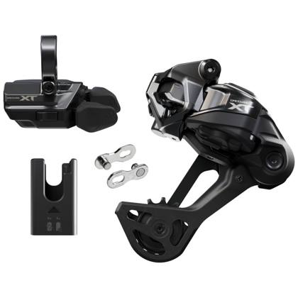
Product photoDrivetrain groupset
Antrieb Shimano XT Di2
42 pcsRef #1
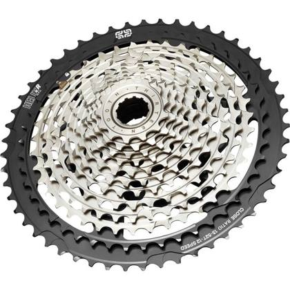
Representative photoDrivetrain groupset
Antrieb e*Thirteen
46 pcsRef #2
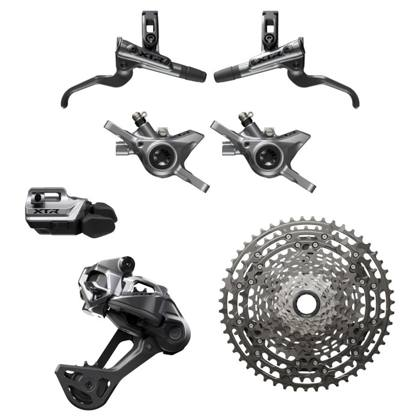
Product photoDrivetrain groupset
Antrieb Shimano XTR Di2
22 pcsRef #3
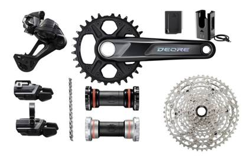
Representative photoDrivetrain groupset
Antrieb Shimano Deore Di2
22 pcsRef #4
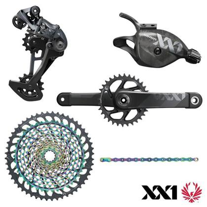
Product photoDrivetrain groupset
Antrieb Sram XX1 Eagle
Crank length 170 mm
4 pcsRef #5
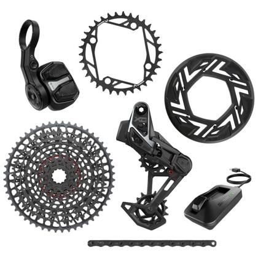
Product photoDrivetrain groupset
Antrieb Sram 90 Transmission
9 pcsRef #6
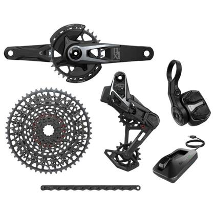
Product photoDrivetrain groupset
Antrieb Sram XO1 Transmission AXS
4 pcsRef #7
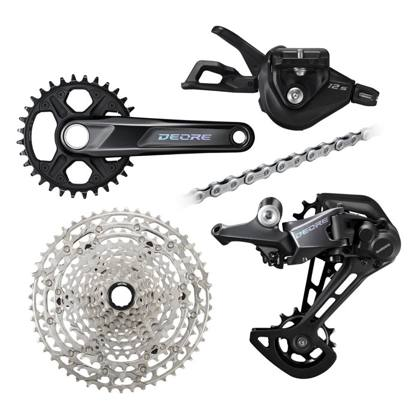
Product photoDrivetrain groupset
Antrieb Shimano Deore
10 pcsRef #8
Suspension – forks & rear shocks 17 items · 145 pcs
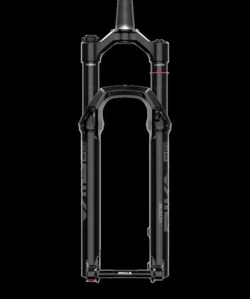
Product photoSuspension fork
Gabel Rock Shox Pike Select Plus 140mm
29 pcsRef #30
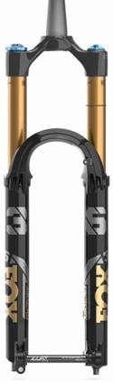
Product photoSuspension fork
Gabel FOX Float FS 36 Grip X 150mm
9 pcsRef #31
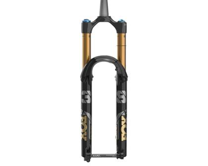
Product photoSuspension fork
Gabel FOX Float FS 38 Grip X2 170mm
6 pcsRef #32
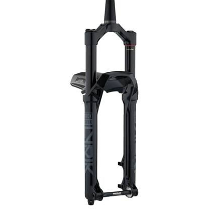
Product photoSuspension fork
Gabel Rock Shox Lyric Select 150mm
7 pcsRef #33
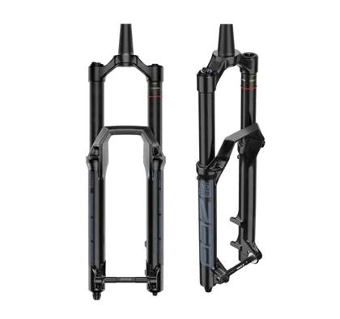
Product photoSuspension fork
Gabel Rock Shox ZEB Select 170mm
1 pcsRef #34
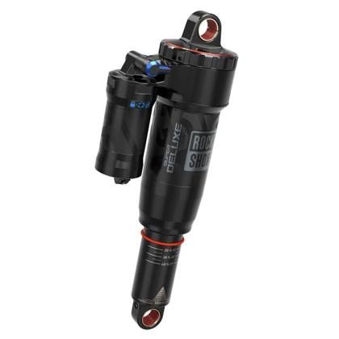
Product photoRear shock
Dämpfer RockShox Super Deluxe Select + (205x65)
15 pcsRef #35
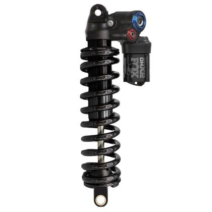
Representative photoRear shock
Dämpfer Fox Coil (185x55)
8 pcsRef #36
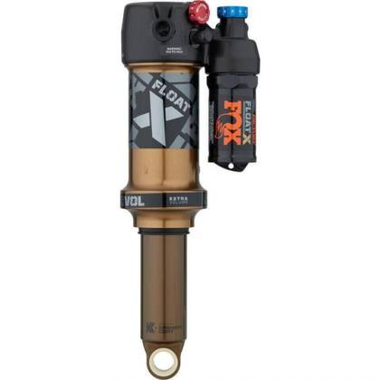
Product photoRear shock
Dämpfer Fox Float X FS (205x60)
7 pcsRef #37
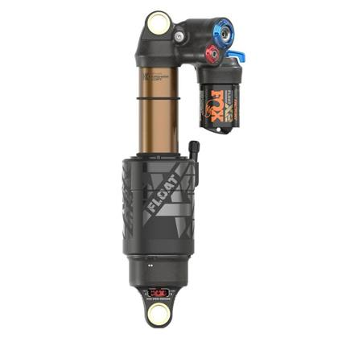
Product photoRear shock
Dämpfer Fox Float X2 FS (230x65)
5 pcsRef #38
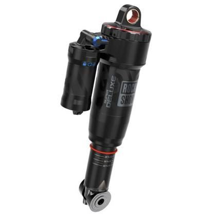
Product photoRear shock
Dämpfer Rockshox Deluxe Select + (185x50)
14 pcsRef #39
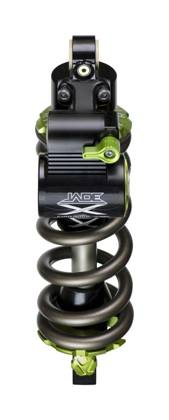
Product photoRear shock
Dämpfer DVO Jade X Coil (185x55)
8 pcsRef #40
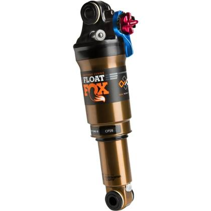
Product photoRear shock
Dämpfer Fox Float DPS (185x50)
6 pcsRef #41
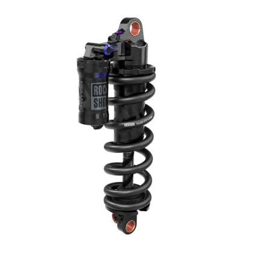
Product photoRear shock
Dämpfer RockShox Super Deluxe Select + Coil (185x55)
6 pcsRef #42
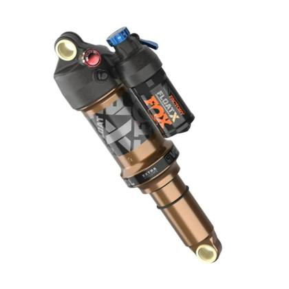
Product photoRear shock
Dämpfer Fox Float X FS (230x60)
4 pcsRef #43
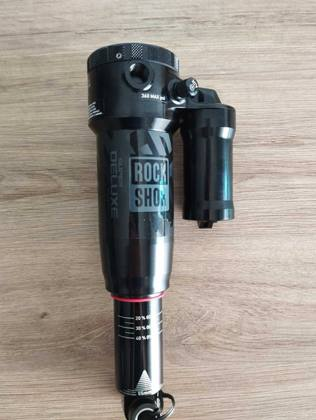
Product photoRear shock
Dämpfer RockShox Super Deluxe Select + (185x55)
5 pcsRef #44
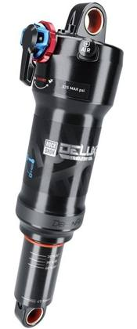
Product photoRear shock
Dämpfer Rockshox Deluxe Ultimate (185X50)
5 pcsRef #45
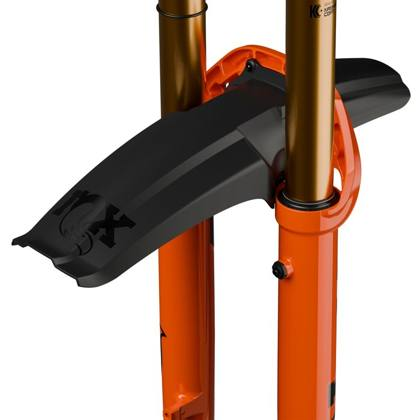
Product photoFork mudguard
Fox fork mudguard
10 pcsRef #46
Disc brakes 15 items · 177 pcs
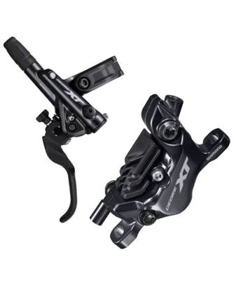
Product photoDisc brake
Bremsen Shimano XT neu
Current model
54 pcsRef #15
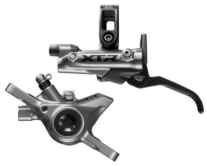
Product photoDisc brake
Bremsen Shimano XTR neu
Current model
22 pcsRef #16
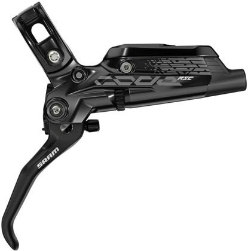
Product photoDisc brake
Bremsen Sram Code RSC
23 pcsRef #17
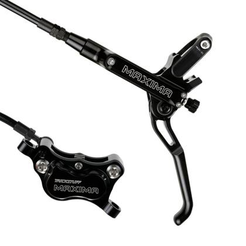
Product photoDisc brake
Trickstuff Piccola HD
5 pcsRef #18
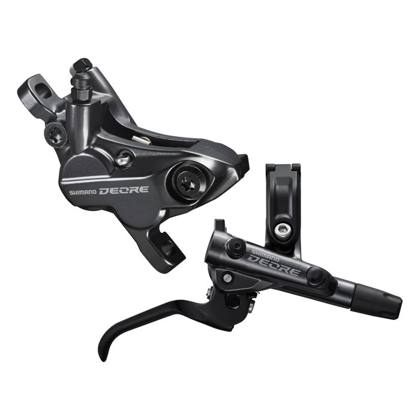
Product photoDisc brake
Bremsen Shimano Deore
24 pcsRef #19
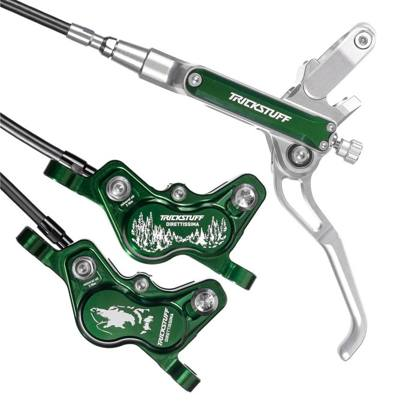
Product photoDisc brake
Trickstuff Direttissima
3 pcsRef #20
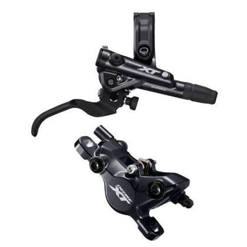
Product photoDisc brake
Bremsen Shimano XT
13 pcsRef #21
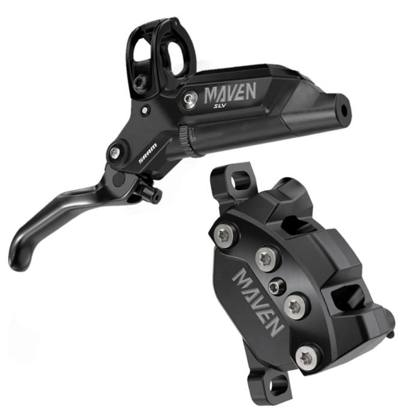
Product photoDisc brake
Bremsen Sram Maven
5 pcsRef #22
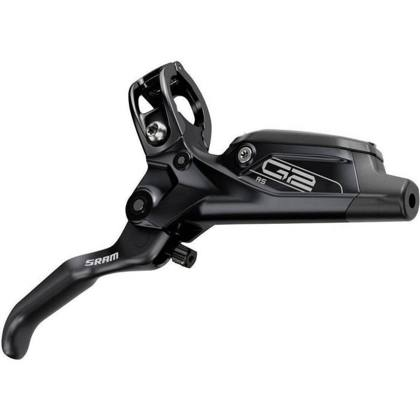
Product photoDisc brake
Bremsen Sram G2 RS
9 pcsRef #23
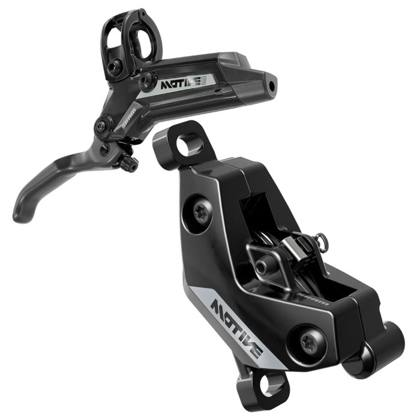
Product photoDisc brake
Bremsen Sram Motive
5 pcsRef #24
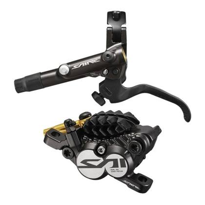
Product photoDisc brake
Bremsen Shimano Saint
4 pcsRef #25
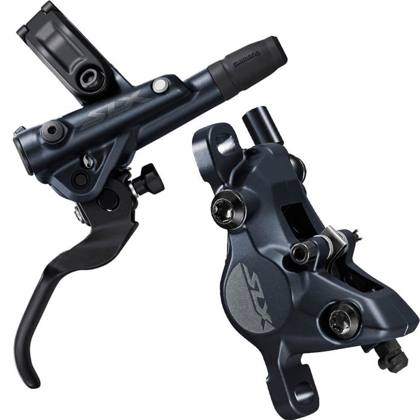
Product photoDisc brake
Bremsen Shimano SLX
5 pcsRef #26
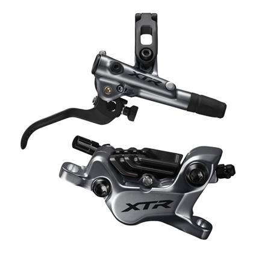
Product photoDisc brake
Bremsen Shimano XTR
2 pcsRef #27
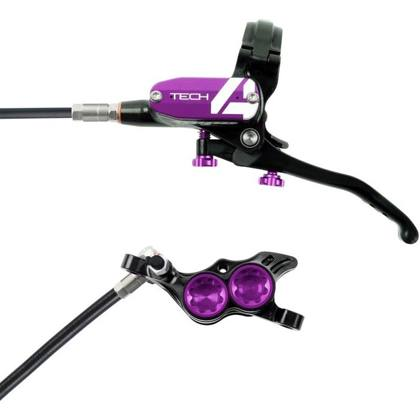
Representative photoDisc brake
Hope
1 pcsRef #28
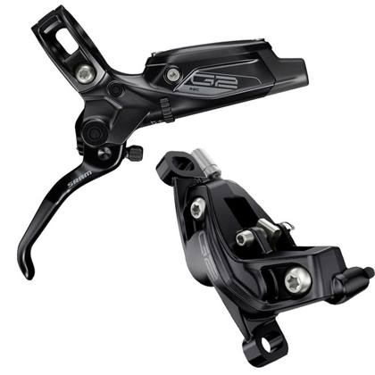
Product photoDisc brake
Bremsen Sram G2 RSC
2 pcsRef #29
Wheels, hubs & rims 11 items · 92 pcs
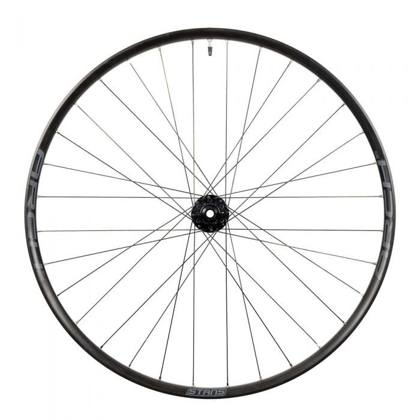
Product photoWheelset
NoTubes Arch S2
Stan's NoTubes Arch S2 wheelset
10 pcsRef #47
 Product photo
Product photoWheelset
NoTubes Flow S2
Stan's NoTubes Flow S2 wheelset
4 pcsRef #48
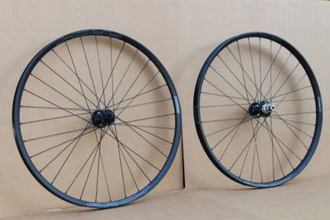
Product photoWheelset
NoTubes Arch MK4 Felgen mit M-Pulse Nabe 29
1 pcsRef #49
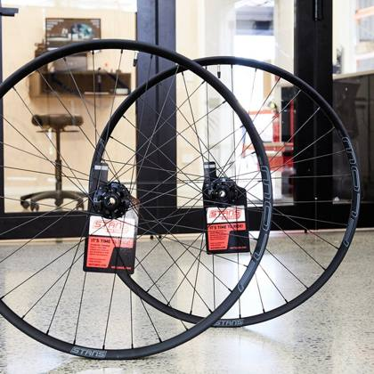
Product photoWheelset
NoTubes Flow MK4 Felgen mit M-Pulse Nabe 29
1 pcsRef #50
 Product photo
Product photoWheelset
DT Swiss H1900
2 pcsRef #51
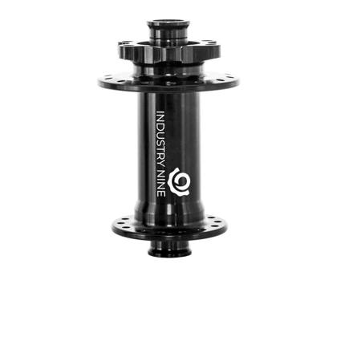
Product photoHub
I9 101
Industry Nine 1/1 hubs
33 pcsRef #52
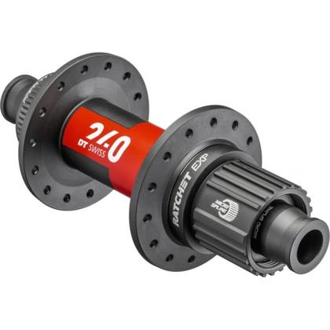
Product photoHub
DT 240
DT Swiss 240 hubs
4 pcsRef #53
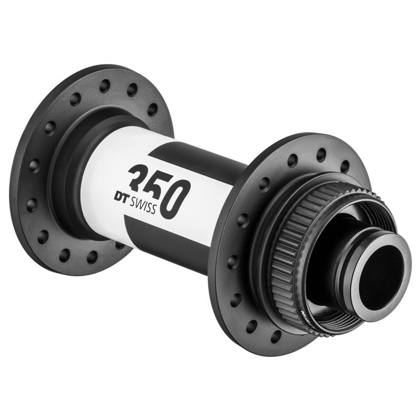
Product photoHub
DT 350
DT Swiss 350 hubs
3 pcsRef #54
 Product photo
Product photoRim
S2 Arch
Stan's NoTubes Arch S2 rims
20 pcsRef #55
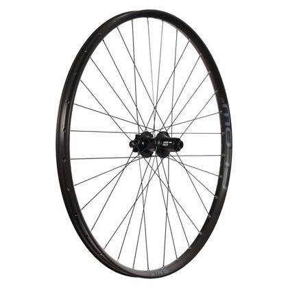
Representative photoRim
S2 Flow
Stan's NoTubes Flow S2 rims
10 pcsRef #56
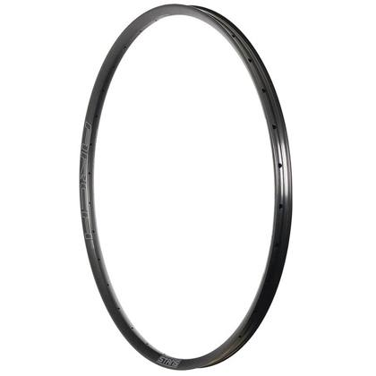
Representative photoRim
Arch mk4
Stan's NoTubes Arch MK4 rims
4 pcsRef #57
Seatposts & saddles 15 items · 222 pcs
 Product photo
Product photoSaddle
Selle Italia SLR Boost Carbon
27 pcsRef #66
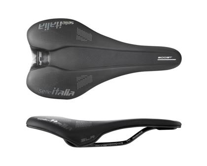
Product photoSaddle
Selle Italia SLR Boost
22 pcsRef #67
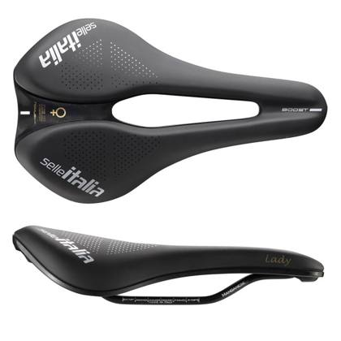
Representative photoSaddle
Selle Italiia Lady Flow
24 pcsRef #68
 Product photo
Product photoSaddle
Selle Italia X3 Boost
31 pcsRef #69
Saddle
Selle Italia X3 Boost Flow
12 pcsRef #70
 Product photo
Product photoDropper seatpost
Kind Shox LEV Integra 125/150/175/200
Travel 125 / 150 / 175 / 200 mm (mix)
46 pcsRef #71
Dropper seatpost
Kind Shock RAGEi 125/150/170/190
Travel 125 / 150 / 170 / 190 mm (mix)
30 pcsRef #72
 Product photo
Product photoDropper seatpost
rock shox reverb
6 pcsRef #73
Dropper seatpost
Fox Transfer FS 150/180/210/240
Factory series, travel 150–240 mm (mix)
3 pcsRef #74
Dropper seatpost
Kind Shox LEV Ci
2 pcsRef #75
Dropper seatpost
Fox Transfer Performance 150/180/210/240
Performance series, travel 150–240 mm
1 pcsRef #76
Dropper seatpost
Kind Shock LEV Si
1 pcsRef #77
Dropper-post remote
rock shox reverb remot
4 pcsRef #78
Dropper-post remote
Fox Transfer remote
1 pcsRef #79
Seatpost
Kore
Kore seatpost
12 pcsRef #80
Cockpit – handlebars, stems & grips 8 items · 380 pcs
Handlebar
Acros Stealth Aluminium
48 pcsRef #58
 Representative photo
Representative photoHandlebar
KS Carbon
20 pcsRef #59
Handlebar
e13 Alu
38 pcsRef #60
 Representative photo
Representative photoStem
Acros
Acros stem
85 pcsRef #61
Stem
e13
e*thirteen stem
37 pcsRef #62
Stem
Kore (35/50mm)
Kore stem, 35 / 50 mm
28 pcsRef #63
Grips
Funn
Funn grips
110 pcsRef #64
Grips
Acros
Acros grips
14 pcsRef #65
Cranksets & chainrings 6 items · 114 pcs
Crankset
sram gx Kurbel
27 pcsRef #9
Crankset
Kurbel E13 Race Carbon
13 pcsRef #10
Crankset
sram xx1 Kurbel
4 pcsRef #11
Crankset
sram xo1 Kurbel
6 pcsRef #12
Crankset
Kurbel E13 Plus Aluminium
33 pcsRef #13
Chainring
Funn Kettenblätter E1
31 pcsRef #14
Pedals, lights & accessories 6 items · 84 pcs
Pedals
Acros A-Flat
36 pcsRef #81
Pedals
Acros Flat (neu)
19 pcsRef #82
 Representative photo
Representative photoPedals
Acros SPD
1 pcsRef #83
Bike light
Licht Supernova Mini 2 LMI
23 pcsRef #84
Bike computer
Sigma EOX View 1300 Standard
1 pcsRef #85
More items without photo (1)
| Ref | Item | Type | Qty |
|---|---|---|---|
| Ref #86 | Carbon-Ti Ultimate Set | Component set | 4 |
Summary of contents
By product type
| Product type | Items | Quantity (pcs) | Share |
|---|---|---|---|
| Disc brake | 15 | 177 | 12.9% |
| Drivetrain groupset | 8 | 159 | 11.6% |
| Stem | 3 | 150 | 10.9% |
| Grips | 2 | 124 | 9.0% |
| Saddle | 5 | 116 | 8.4% |
| Handlebar | 3 | 106 | 7.7% |
| Dropper seatpost | 7 | 89 | 6.5% |
| Crankset | 5 | 83 | 6.0% |
| Rear shock | 11 | 83 | 6.0% |
| Pedals | 3 | 56 | 4.1% |
| Suspension fork | 5 | 52 | 3.8% |
| Hub | 3 | 40 | 2.9% |
| Rim | 3 | 34 | 2.5% |
| Chainring | 1 | 31 | 2.3% |
| Bike light | 1 | 23 | 1.7% |
| Wheelset | 5 | 18 | 1.3% |
| Seatpost | 1 | 12 | 0.9% |
| Fork mudguard | 1 | 10 | 0.7% |
| Dropper-post remote | 2 | 5 | 0.4% |
| Component set | 1 | 4 | 0.3% |
| Bike computer | 1 | 1 | 0.1% |
| Total | 86 | 1,373 | 100% |
By categorie
| Categorie | Items | Quantity (pcs) | Share |
|---|---|---|---|
| Drivetrain groupsets | 8 | 159 | 11.6% |
| Suspension – forks & rear shocks | 17 | 145 | 10.6% |
| Disc brakes | 15 | 177 | 12.9% |
| Wheels, hubs & rims | 11 | 92 | 6.7% |
| Seatposts & saddles | 15 | 222 | 16.2% |
| Cockpit – handlebars, stems & grips | 8 | 380 | 27.7% |
| Cranksets & chainrings | 6 | 114 | 8.3% |
| Pedals, lights & accessories | 6 | 84 | 6.1% |
| Total | 86 | 1,373 | 100% |
Shipping estimate
| Total volume (approx.) | ≈ 10–16 m³ |
| Total weight (approx.) | ≈ 1–2 t |
| 40′ High Cube containers | 1 |
| 20′ Standard containers | 1 |
Estimate from typical boxed sizes and weights of these component types (forks and wheelsets take most of the space); palletised. Final loading plan confirmed after viewing.
Container capacity used: 40′ HC ≈ 68 m³ / 26.5 t, 20′ ≈ 28 m³ / 24 t (practical loading).
Container capacity used: 40′ HC ≈ 68 m³ / 26.5 t, 20′ ≈ 28 m³ / 24 t (practical loading).